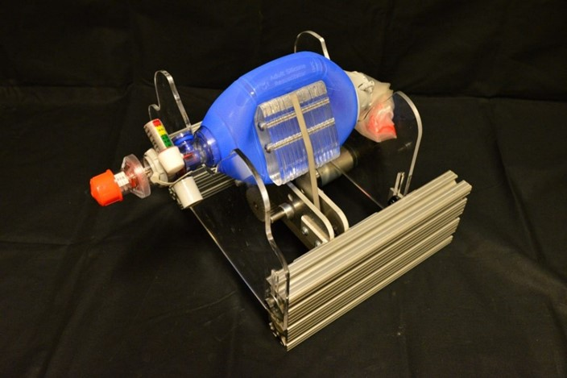
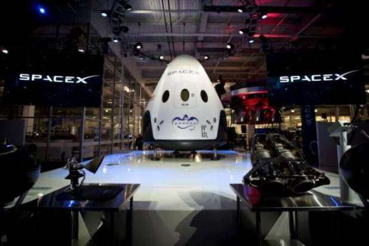
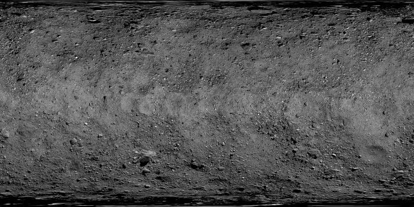
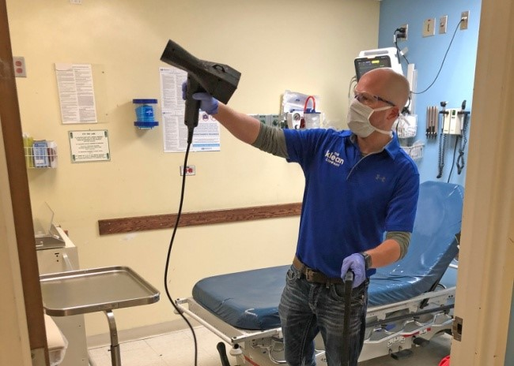
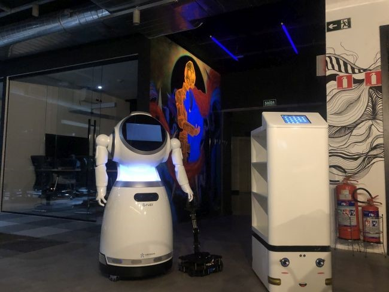
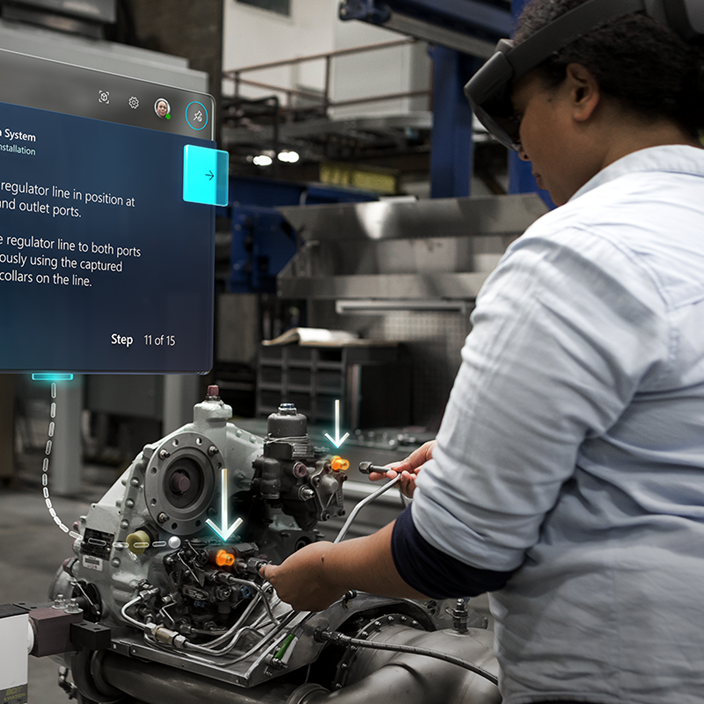

A pandemia da covid-19 revelou uma grande fraqueza dos nossos sistemas de saúde: a quantidade limitada de ventiladores pulmonares disponível nos leitos de internação. Trabalhando para amenizar esse problema, engenheiros do Instituto de Tecnologia de Massachusetts, o MIT, desenvolveu um dispositivo menor e mais barato capaz de abastecer hospitais em situação crítica. Batizado de MIT Emergency Ventilator — ou E-Vent, como foi apelidado — é um dispositivo motorizado que comprime e expande uma bolsa ar para simular o movimento de respiração e encaminhar ar para os pulmões. O E-Vent está sujeito a avaliações da Food and Drug Administration, uma agência federal do Departamento de Saúde e Serviços Humanos estadunidense. Configurado como “Emergency Use Authorization.”, o projeto está sendo tratado como prioridade pelo órgão e deve ter utilização aprovada em poucos dias.
A corrida espacial travada por empresas de tecnologia espacial está próxima de ficar ainda mais acirrada. Para o sábado (18), a SpaceX planeja o último grande teste de sua cápsula Crew Dragon, com a qual planeja levar humanos para o espaço neste ano. E, em breve, até para a Lua. O lançamento foi anunciado por meio de um tuíte no perfil da empresa, que completou os testes de “fogo estático” do foguete Falcon 9 no último final de semana, e que no próximo dia 18 fará uma demonstração com um voo no modo de sistema de fuga. Ou seja, vai ser recriada uma situação de emergência para testar a capacidade de a cápsula manter os astronautas em segurança em um cenário inesperado e perigoso, durante a ascensão ao espaço. Em dezembro ocorreu a primeira viagem da cápsula espacial Starline, fabricada pela Boeing, concorrente da SpaceX de Elon Musk. A missão foi considerada um fracasso, devido à antecipação do retorno da nave, que ficou em órbita apenas em três dos sete dias planejados.
O "asteroide do fim do mundo" Descoberto em 11 de setembro de 1999, o 101955 Bennu é um asteroide com pouco mais de 490 metros de diâmetro, que cruza a órbita terrestre a cada seis anos. Conforme cálculos dos astrônomos, ele tem 1 chance em 2.500 de colidir com a Terra no ano 2135. Mesmo se tratando de uma possibilidade remota, ele vem sendo monitorado pela NASA desde então, que enviou a sonda OSIRIS-REx até ele, em 2016. A missão já revelou, entre outras coisas, que ele é feito de material solto, agrupado pela gravidade, apresentando uma superfície coberta de pedras e rochas do tamanho de carros e casas.
Em busca de formas mais eficientes de proteger os profissionais da saúde do novo coronavírus, bem como os pacientes internados, um hospital de Nova Jersey, nos Estados Unidos, está testando um novo produto de higienização que promete manter o vírus longe das superfícies por semanas ou até meses. Intitulado Sistema de Supressão Microbiana NanoVapor BioTech (ou MSS, na sigla em inglês), ele consiste na aplicação de nanopartículas antimicrobianas em superfícies e objetos, por meio de um pulverizador especial. A solução esteriliza e cria um revestimento biodegradável capaz de continuar a eliminar bactérias, fungos e vírus como o causador da covid-19 mesmo após a utilização. De acordo com a fabricante, os testes feitos mostraram que houve uma redução de 99,8% na contagem microbiana no local que recebeu o produto, mesmo com 70 dias após a aplicação da substância. Além disso, ela pode permanecer eficaz por até 90 dias.
Pesquisadores da Universidade Purdue, nos EUA, desenvolveram um dispositivo que seria capaz de “ouvir” estruturas celulares e identificar doenças. Segundo uma publicação do site Science Daily, o aparelho funciona por meio da propagação de ondas sonoras através da matriz extracelular – uma espécie de rede estrutural formada por moléculas que envolve e contém células – e detectar pontos de rigidez que indicariam a presença e disseminação de enfermidades.
Um robô que pode interagir com os pacientes contaminados pela covid-19 já está disponível para uso no Brasil. Ele pode auxiliar os profissionais da saúde no atendimento e contribuir para prevenir a contaminação pelo vírus. Desenvolvido pela empresa Alabia, o robô conta com a mesma tecnologia utilizada recentemente nos hospitais da China, país onde a doença surgiu e teve dezenas de milhares de infectados. Por lá, ele se mostrou bastante eficaz no combate à proliferação do novo coronavírus, de acordo com a companhia. Focados em evitar o contato entre contaminados e profissionais da saúde, os robôs da Alabia podem levar alimentos para os pacientes, entregar remédios e realizar diversas outras tarefas para ajudar no tratamento hospitalar, interagindo tanto com os casos suspeitos quanto com os confirmados.
Falar em inteligência artificial sempre traz a questão: "posso perder meu emprego para uma máquina?'. No entanto, a verdade é que a tecnologia ajuda a criar mais empregos do que a destruir. E com um bônus: para ser um profissional requisitado no mercado é preciso estar disposto a aprender constantemente. Ser uma espécie de profissional-estudante. No caso da inteligência artificial, é necessário preparo, educação, treinamento, e retenção de talentos. Não importa a natureza da profissão, obter conhecimentos em ciência da computação e pensamento computacional é um grande diferencial na resolução de problemas do dia a dia. O que certamente leva a melhores colocações no mercado.
